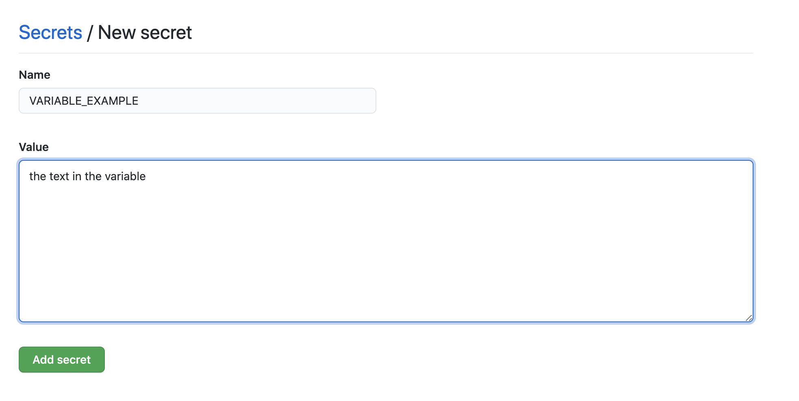

If you've attended Android Academy's previous workshops
- Make sure your starter project is up to date and uploaded to your Github repository.
If you just came here - welcome! Please fork our starter project into your Github Account
- In the following link: https://github.com/AcademyTLV/StartFromScratch.
- Go to right top corner and click "Fork".
- Then go to your forked repository and pull the code to your local machine.
- Open downloaded file in Android Studio, build and compile.
Congrats! We can start with CI related files now :)
Add workflow file
1. Go to project and a directory .github in the root.
2. Inside it, create another directory called workflows (This is where all the GitHub Actions configuration files go).
3. Create first configuration file workflow_1.yaml.
4. Open it and add next code:
name: "CI Workflow"
on: [push]
jobs:
build:
name: "Build project"
runs-on: ubuntu-latest
steps:
- name: "Checkout current repository in ubuntu's file system"
uses: actions/checkout@v1
- name: "Setup JDK 1.8"
uses: actions/setup-java@v1
with:
java-version: 1.8
- name: "Builds debug build"
run: ./gradlew assembleDebug
5. Commit ang push the changes to origin:
git add .
git commit -m "Initial build action add"
git push origin master
6. You should see a result: 
Run unit tests locally
1. Go to your test folder.
2. Locate ExampleUnitTest.kt or other test files and validate the test passes locally by running in command line
./gradlew testDebugUnitTest
Modify .yaml file:
1. Add to the bottom of your workfow file:
- name: Unit tests
run: ./gradlew testDebugUnitTest
2. Commit ang push the changes:
git commit -m "Add unit test to the workflow"
git push origin master
Modify .yaml file
1. Change from ./gradlew assembleDebug to ./gradlew assembleRelease
2. Change from ./gradlew testDebugUnitTest to ./gradlew testReleaseUnitTest
3. Commit ang push the changes:
git commit -m "Convert build to release"
git push origin master
An environment variable is a dynamic-named value that can affect the way running processes will behave on a computer.
When running on your local machine there are few ways to use it:
- run in terminal:
export MY_ENVIROMENT_VARIABLE = some_value
- add to your
bashrcfile - your bash config file:
export MY_ENVIROMENT_VARIABLE = some_value
But when we run a process the Github Actions' remote machine we define the environment variable in another way:
1. Go to the github project repository.
2. Follow the Settings tab.
3. In the Settings tab go to Secrets on the left menu (If you can't see it - maybe you don't have permissions for this project).

4. Now click on the "New Repository Secret" on the right top.
5. Add a new secret!

7.1 - Create release.keystore file if not exist yet (skip to step 7.2 if already have one)
- Go to
Android Studio -> Build -> Generate Signed Bundle or APK. - Choose APK and click
Next. - In the
Keystore PathclickCreate new.... - Follow wizard instructions, fill relevant data and remember created keystore location.
7.2 - Generate base64 string from release.keystore file
- Open terminal in the folder where the keystore located at.
- Run
base64 -w 0 release.keystore | xclip -selection clipboard(It will also copy the created string to your clipboard).
7.3 - Add keystore string to Github secrets
- Go to your
Github repository -> Settings -> Secrets. - Create new secret and give it name
SIGNING_KEY. - Paste previously copied string as secret value and save the secret.
Modify .yaml file:
1. Add these lines after Grant rights step:
- name: Restore release keystore
run: echo "${{ secrets.SIGNING_KEY }}" | base64 --decode > app/release.keystore
2. Commit and Push your code.
2. Verify the build passes.
Now we have release keystore file added on each build, we can use it and sign our application with Github Actions.
// TODO Nitzan - continue from here–>